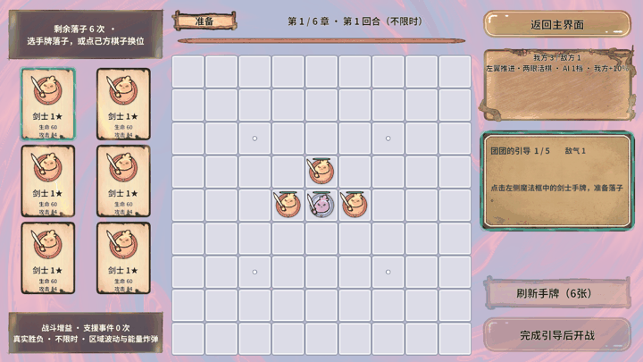
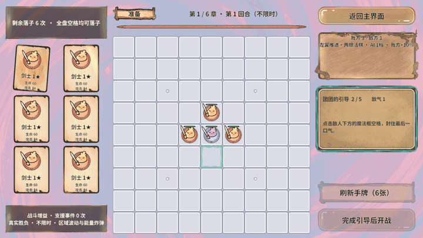
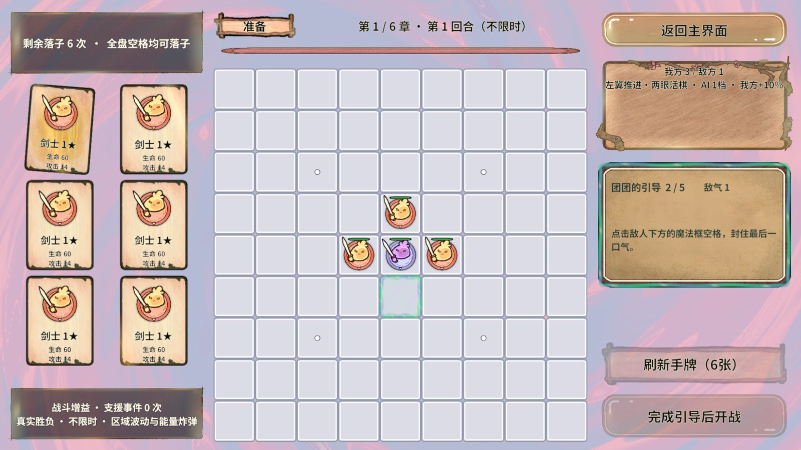
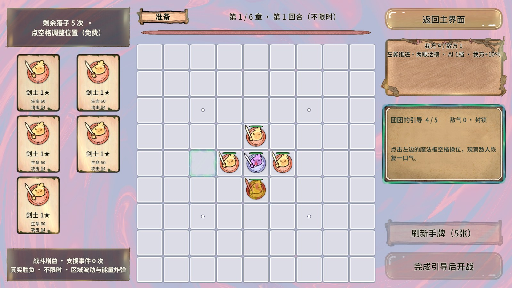
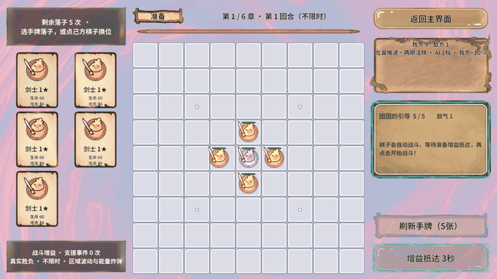
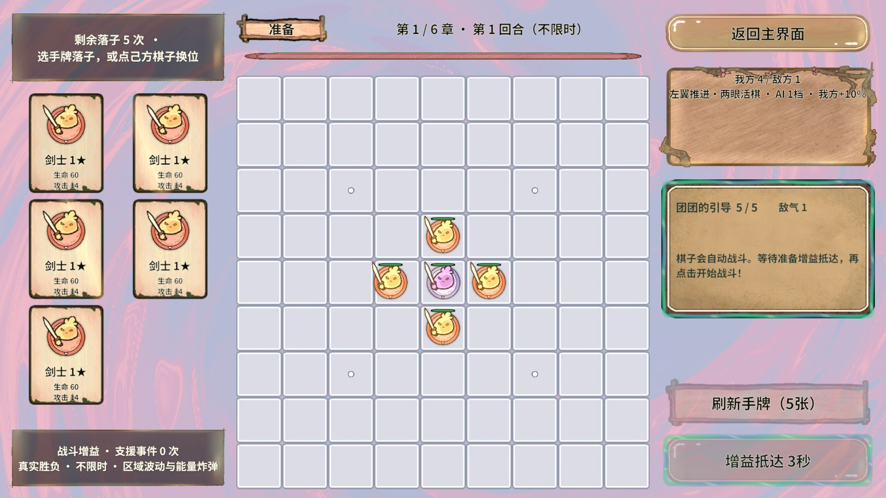

REVGAME · REVOLUTION 框架业务验收更清楚的魔法教学引导
2026-10-26 · Unity 2022.3.15f1c1 · 1920×1080 · PC真实AssetBundle · 图形Play
70 个步骤 + 2 个清理步骤全部通过针对“文字偏小、UI高亮不明显、提示框无高亮、棋格缺少闪烁”的反馈再次修订。以下画面均来自本次重新构建后的真实运行。
本次变化
- 提示框实测由约444×177放大至463×302；正文上限22→28，标题20→24，气数18→22。
- 根据实际可见按钮和状态面板的矩形寻找右栏最大空隙，预留间距后最多占29%栏高。不移动其他控件。
- 手牌／按钮使用4.5像素魔法边框、绕行光珠、深色衬边与呼吸；提示框也有独立的常驻魔法边缘。
- 落子、选子、换位目标使用5像素边框和淡色底光，约0.85Hz明暗呼吸闪烁。最低保留轮廓，不瞬间消失。
- 三个表现共用SlimeTutorialHighlight Shader，分别使用三份共享材质；不逐帧创建材质，不拦截真实UI及棋盘点击。
四段动态效果
手牌与提示框

查看高清截图
落子目标闪烁

查看高清截图

换位目标闪烁
查看高清截图

开始战斗按钮

查看高清截图

每段12帧，完整画面仅等比缩放压缩，未裁剪／拼接／加强颜色。GIF每帧150ms便于观察。独立检查空落点区域连续帧的实际像素，最大平均通道变化为7.38/255，确认效果确实随时间变化。
验证结果
从大厅通过RevGame/新手教学进入GameScene，真实手牌点击→落子封气→选子→换位→原始开始战斗按钮，随后返回大厅。五阶段均验证textFits=true、overlapCount=0、hintHighlight=true、focusVisible=true、raycast=false。气数从1到0再回1，手牌6到5，开战后引导关闭、第一章剧情正常出现。
运行Error/Exception=0。PC和Android各32个AB构建成功，315条资源映射，新增材质由material_ui管理，Shader由shared_shaders管理；六章背景仍保持独立。
框架可行性：复用RevUI职责钩子、RevTimer生命周期、RevGM入口、GameFlow场景流程与资源门面完成实现。没有创建第二张棋盘或修改框架内核。
全部步骤及清理结果
| 序号 | 入口 | 实际结果 |
|---|
| 1 | story.state | StartScene / Prepare |
| 2 | RevGame/新手教学 | 通过 |
| 3 | ui.dump | 通过 |
| 4 | ui.click | 通过 |
| 5 | ui.dump | 通过 |
| 6 | ui.click | 通过 |
| 7 | story.state | SelectCard：重叠0；文本完整True；提示框高亮True |
| 8 | runtime.screenshot | 连续真实截图：cardFrame0 |
| 9 | runtime.screenshot | 连续真实截图：cardFrame1 |
| 10 | runtime.screenshot | 连续真实截图：cardFrame2 |
| 11 | runtime.screenshot | 连续真实截图：cardFrame3 |
| 12 | runtime.screenshot | 连续真实截图：cardFrame4 |
| 13 | runtime.screenshot | 连续真实截图：cardFrame5 |
| 14 | runtime.screenshot | 连续真实截图：cardFrame6 |
| 15 | runtime.screenshot | 连续真实截图：cardFrame7 |
| 16 | runtime.screenshot | 连续真实截图：cardFrame8 |
| 17 | runtime.screenshot | 连续真实截图：cardFrame9 |
| 18 | runtime.screenshot | 连续真实截图：cardFrame10 |
| 19 | runtime.screenshot | 连续真实截图：cardFrame11 |
| 20 | ui.dump | 通过 |
| 21 | ui.click | 通过 |
| 22 | story.state | SealLiberty：重叠0；文本完整True；提示框高亮True |
| 23 | runtime.screenshot | 连续真实截图：cellFrame0 |
| 24 | runtime.screenshot | 连续真实截图：cellFrame1 |
| 25 | runtime.screenshot | 连续真实截图：cellFrame2 |
| 26 | runtime.screenshot | 连续真实截图：cellFrame3 |
| 27 | runtime.screenshot | 连续真实截图：cellFrame4 |
| 28 | runtime.screenshot | 连续真实截图：cellFrame5 |
| 29 | runtime.screenshot | 连续真实截图：cellFrame6 |
| 30 | runtime.screenshot | 连续真实截图：cellFrame7 |
| 31 | runtime.screenshot | 连续真实截图：cellFrame8 |
| 32 | runtime.screenshot | 连续真实截图：cellFrame9 |
| 33 | runtime.screenshot | 连续真实截图：cellFrame10 |
| 34 | runtime.screenshot | 连续真实截图：cellFrame11 |
| 35 | RevGame/点格子 | 通过 |
| 36 | story.state | SelectAlly：重叠0；文本完整True；提示框高亮True |
| 37 | runtime.screenshot | 连续真实截图：None |
| 38 | RevGame/点格子 | 通过 |
| 39 | story.state | MoveAlly：重叠0；文本完整True；提示框高亮True |
| 40 | runtime.screenshot | 连续真实截图：moveFrame0 |
| 41 | runtime.screenshot | 连续真实截图：moveFrame1 |
| 42 | runtime.screenshot | 连续真实截图：moveFrame2 |
| 43 | runtime.screenshot | 连续真实截图：moveFrame3 |
| 44 | runtime.screenshot | 连续真实截图：moveFrame4 |
| 45 | runtime.screenshot | 连续真实截图：moveFrame5 |
| 46 | runtime.screenshot | 连续真实截图：moveFrame6 |
| 47 | runtime.screenshot | 连续真实截图：moveFrame7 |
| 48 | runtime.screenshot | 连续真实截图：moveFrame8 |
| 49 | runtime.screenshot | 连续真实截图：moveFrame9 |
| 50 | runtime.screenshot | 连续真实截图：moveFrame10 |
| 51 | runtime.screenshot | 连续真实截图：moveFrame11 |
| 52 | RevGame/点格子 | 通过 |
| 53 | story.state | Ready：重叠0；文本完整True；提示框高亮True |
| 54 | runtime.screenshot | 连续真实截图：readyFrame0 |
| 55 | runtime.screenshot | 连续真实截图：readyFrame1 |
| 56 | runtime.screenshot | 连续真实截图：readyFrame2 |
| 57 | runtime.screenshot | 连续真实截图：readyFrame3 |
| 58 | runtime.screenshot | 连续真实截图：readyFrame4 |
| 59 | runtime.screenshot | 连续真实截图：readyFrame5 |
| 60 | runtime.screenshot | 连续真实截图：readyFrame6 |
| 61 | runtime.screenshot | 连续真实截图：readyFrame7 |
| 62 | runtime.screenshot | 连续真实截图：readyFrame8 |
| 63 | runtime.screenshot | 连续真实截图：readyFrame9 |
| 64 | runtime.screenshot | 连续真实截图：readyFrame10 |
| 65 | runtime.screenshot | 连续真实截图：readyFrame11 |
| 66 | story.state | Ready：重叠0；文本完整True；提示框高亮True |
| 67 | ui.dump | 通过 |
| 68 | ui.click | 通过 |
| 69 | story.state | GameScene / Battle |
| 70 | runtime.logs | 运行Error/Exception=0 |
| 71 | RevGame/返回主界面 | 通过 |
| 72 | story.state | StartScene / Battle |
复现与边界
执行Tests/StoryTutorialAutomation/strong-guidance.plan.json；准备flags=3的隔离进度，冷启动StartScene，runtime.start后rev_discover，再rev_run。测试完成先返回大厅，停止Play并解除隔离开关。
未验证手机实机和全部屏幕比例；当前不遮挡结论来自本次1920×1080的实际控件边界。Android验证范围为资源构建。后续自行加入新的独立非按钮面板时，应把其占位矩形加入CollectOccupied。
本报告替代上一版柔和高亮的视觉验收。保留HTML、4张截图与4段GIF，不生成ZIP；原始证据位于忽略目录.codex/work/tutorial-guidance，不提交。